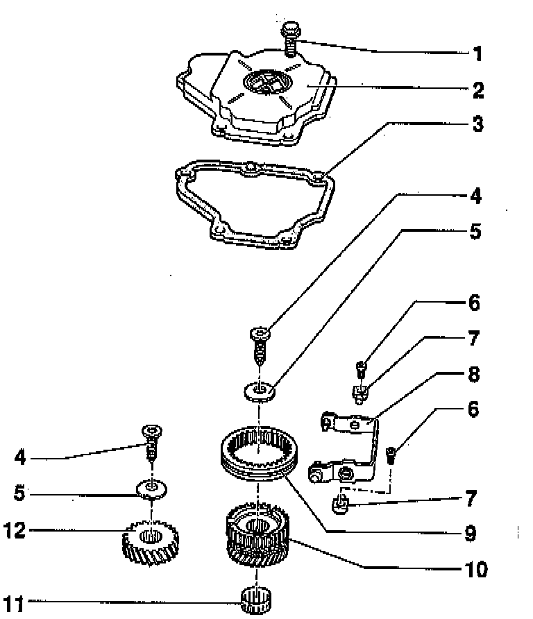

Transmission Housing Cover and 5th Gear Removing/Installing

COMPONENT NOTES AND INFORMATION
1 Hex bolt
- For transmission housing cover
- Tighten to: 10 Nm (7 ft lb)
2 Transmission housing cover
NOTE: If the transmission housing cover is installed, check transmission oil level as follows:
^ Fill with oil up to lower edge of filler hole.
^ Install plug.
^ Start engine, engage a gear and let the transmission turn for approx. 2 minutes.
^ Stop engine and add oil to fill transmission to lower edge of filler hole again.
3 Gasket
4 Torch socket-head bolt
- Tighten to: 80 Nm (59 ft lb)
- Bolt head design holds Belleville spring -5- in place
5 Belleville spring
- Installation position, refer to Disassembly/Assembly Procedure
6 Socket-head bolt
- Tighten to: 25 Nm (18 ft lb)
- Pivot pin to trans. housing
7 Pivot pin
8 5th gear shift fork
- Disassembling/assembling, refer to Overhaul. Service and Repair
- Adjusting, refer to Disassembly/Assembly Procedure
9 Operating sleeve, 5th gear
- Installation position, refer to Disassembly/Assembly Procedure
- Adjusting, refer to Disassembly/Assembly Procedure
10 Synchronizer hub (synchro-hub) with 5th gear and synchronizer ring (synchro-ring)
- Disassembling/assembling, refer to Overhaul.
11 Needle bearing
12 5th gear
- Installation position, refer to Disassembly/Assembly Procedure.